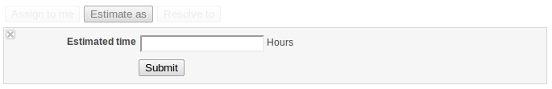
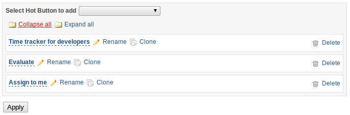
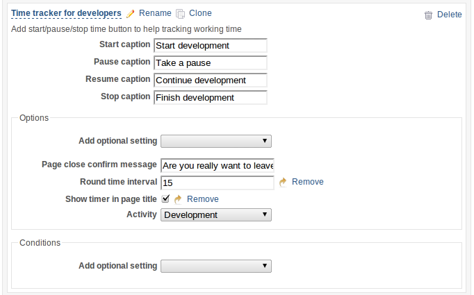
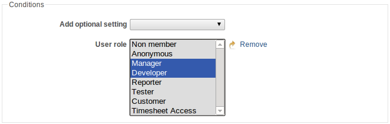
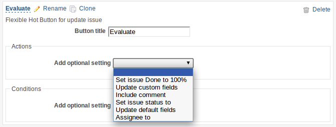
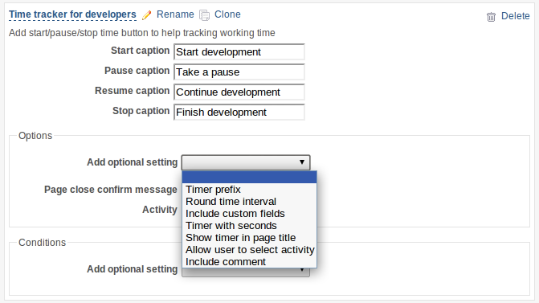
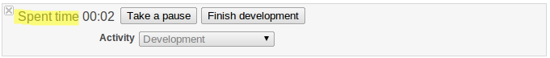
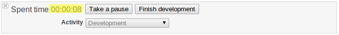
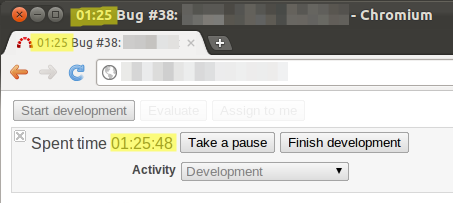

Issue Hot Buttons plugin for Redmine
Contents
About plugin
This plug-in allows to add on issue pages buttons for often used actions and timers for help tracking working time for issue.
Install
- Download plugin from GitHub
- Extract to vendors/plugins of installed Redmine
- Restart web server
Buttons
At the moment available two types of buttons.
"Update issue" button
The button is intended for simplification of often used chains of actions for issue. Allows to configure conditions at which it will be displayed, performed actions for issue, including updating standard and custom fields.
Examples of possible configurations:
- Assign to me - Assign issue to current user (for all users)
- Resolved - Set issue done status to 100% and reassign to tester (for developers)
- Evaluate - Set issue status to "Evaluated" and update "Estimated time" (for developers and managers)
- Reject - Set issue status to "Rejected" and reassign to developer (for testers)
- Close - Set issue status to "Closed" (for testers and managers)
In case the current information has not enough to execute action (for example, it is required to choose the new status of issue or to enter estimated time) additional area with demanded fields will be displayed under the button.
Go to "Issue update" button config.
"Time tracker" button
The button is intended for simplification of calculation of time spent for issue. Generally represents button "Start working", by pressing on which the additional block with the timer and buttons "Pause working" is displayed and "Finish working". By pressing button "Pause working" the timer stops, by pressing the button "to Finish work" spent time saved.
Go to "Time tracker" button config.
Configuration
Plug-in options are carried out on page "Administration" -> "Plugns". The sequence of buttons in the list corresponds to sequence of a conclusion on issue page. It is possible to reordering buttons by "drag-and-drop". The button name is used only in options and not displayed for users on issue page.
There are required and additional options for each button. Additional options are added from the dropping out list "Add optional settings".
Common configuration
All buttons contain conditions options at which coincidence the button will be displayed to the user. All condition options are optional.
Issue status
Select issue statuses for which the button will be displayed.
Issue tracker
Select issue trackers for which the button will be displayed.
User role
Select user roles for which the button will be displayed.
Project
Select projects for which the button will be displayed.
"Issue update" button config
All options of actions for this button, except Caption are optional. The button which does not have any configured actions isn't meaningful.

Set issue Done to 100%
Set issue complete status to 100%
Update custom fields
Select issue custom fields which will be displayed under the button.
Include comment
To add the comment to issue update action.
Set issue status to
Select status which will be assigned to issue after button pressing.
Update default fields
Select issue standart fields which will be displayed under the button.
Assingee to
Select roles of users which will be displayed in the dropping out list under the button.
Note: If selected only "<< current user >>", list of users will not displayed under the button.
"Time tracker" button config
Required buttons: Start caption, Pause caption, Resume caption, Stop caption, Page close confirm message and Activity. Other buttons are optional.
Start caption
The text displayed on the button of the beginning of work.
Pause caption
The text displayed on the button of the pause of work.
Resume caption
The text displayed on the button of the continue of work.
Stop caption
The text displayed on the button of the stop of work.
Page close confirm message
The text of the warning of the user about attempt to leave (close) page with working timer.
Activity
Select time entry activity type.
Allow user to select activity
If it is active, the dropping out list of a choice of activity will be unblocked.
Timer prefix
Text that displayed before timer.
Round time interval
To approximate spent time to the specified interval (in minutes) on saving.
Timer with seconds
If selected, show timer with seconds.
Show timer in page title
Display the timer in title of a window(tab).
Update custom fields
Include custom fields, that related to time entry.
Include comment
To add the comment to spend time entry.
See also
At initialization of buttons conformity to current options of sequence of actions is checked. If the button is not displayed, but you ensure that conditions of display are adjusted truly, open the form of editing of a problem and check up, whether all demanded fields of a problem are accessible to editing, whether contain dropping out lists demanded values etc.
Author
Mike Kolganov, 2011-2012